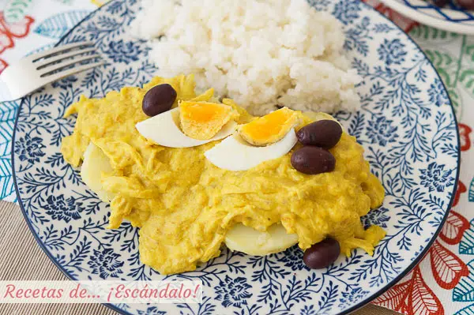

Nuestros Segundos
Deleita tu paladar con nuestra refinada selección de segundos que tenemos para tí
Aji de Gallina
Receta tradicional peruana | Para 6 personas

Ingredientes
- 3 cebollas
- 4 dientes de ajo
- 2 pechugas de gallina o pollo
- 2 - 3 hojas de laurel
- 1 Zanahoria mediana
- 1 Apio mediano
- 300gr. de arroz
- 4 rebanadas pan de molde
- 2 tazas de leche evaporada
- 4 - 6 ajíes amarillos
- 50gr. de pecanas
- 100gr. de queso parmesano en polvo
- 3 huevos
- 6 papas (o patatas) medianas
- Aceitunas negras con hueso
- Aceite de oliva, sal y pimienta negra molida
- Cúrcuma y comino
Preparación
-
Cocción de las pechugas.
- Colocamos el pollo o la gallina en una olla junto con las hojas de laurel, la zanahoria y el apio. Las verduras deben de estar peladas y cortadas en cuadrados grandes.
- Cubre la olla con agua hasta sumergir las pechugas, sazonamos con sal y un poco de pimienta negra.
- Encendemos el fogón a temperatura alta y la colocamos en el mínimo cuando empiece a hervir.
- Dejamos cocinar la pechuga por 20 minutos a más, esto dependerá del tamaño que tengan.
- Sacamos las pechugas y reservamos un poco de caldo, el resto lo podemos guardar para próximas preparaciones.
-
Cocción de los acompañantes.
- Llena un cazo con agua y enciende el fuego a temperatura alta para que llegue a la ebullición. Añade un poco de vinagre cuando ocurra.
- Introduce los huevos y déjalos durante 10 minutos. Reservar.
- Para las papas (o patatas) tenemos que limpiarlas antes de introducirlas en una olla grande
- Llena la olla con agua y deja que llegue a hervor
- Introduce las papas y déjalas ahí por 25 minutos o hasta que queden tiernas al pinchar
- Reserva hasta que se enfríen, para poderlas pelar
- Para hacer el arroz tenemos que colocarlo en una olla mediana en agua hirviendo con un toque de sal
- Bajamos la temperatura cuando vuelva a hervir
- Dejamos que repose por 15 minutos y apagamos el fuego
- Pasta de ají amarillo
- Cortamos los ajíes en 4, separando las venas. Cortamos las cebollas y los ajos en cuadrados grandes
- Colocamos aceite a una sartén y la colocamos a fuego medio, echamos los ajíes, las cebollas y los ajos hasta que estén dorados y/o tiernos
- Echamos todo en una licuadora junto con un poco del caldo de pollo y aceite, licuamos
- Colamos la pasta para eliminar cualquier residuo y lo reservamos
- Remojamos el pan de molde en el caldo de cocción hasta que este tierno
- Molemos las pecanas en un mortero hasta que tengan una textura fina
- Deshilachamos las pechugas de pollo
- Cocinamos en una sartén a fuego medio la pasta que hemos hecho junto con el comino, hasta que reduzca
- Colocamos la pechuga deshilachada y la doramos
- Colocamos el pan remojado para cocinarlo y así quitarle el sabor a harina
- Echamos las pecanas molidas
- Luego de 5 minutos echamos queso parmesano y un poco de caldo de pollo, según que tan seco veas el guiso
- Sirve el ají de gallina sobre papas y acompañado del arroz blanco. Decora con aceitunas y el huevo cocido
Espaguetis con salsa cremosa de parmesano y trufa negra

Que la pasta es un salvavidas cuando hay prisas en la cocina es una verdad como un templo. Y que se puede acompañar de casi cualquier alimento y conseguir un plato único con que solucionar la comida, también. Estos espaguetis con salsa cremosa de parmesano y trufa negra son buen ejemplo de ello. Deliciosos, saciantes y listos en 15 minutos. El esqueleto de la salsa se prepara en cinco minutos y, muy posiblemente, con productos que tenéis en vuestra nevera: huevo, nata líquida y queso. En este caso usamos parmesano, pero un manchego curado u otro queso de pasta dura puede quedar igual de bien. La trufa negra aporta un plus sabor excepcional al plato, aunque sin ella está también tremendamente rico.
Ingredientes:
- Queso parmesano 60g
- 2 yemas de huevos
- Nata liquida para cocinar 100g
- Espaguetis o cualquier otra variedad de pasta larga
- Trufa negra fresca al gusto
- Sal
- Pimienta
Instrucciones:
- Cocer la pasta en agua hirviendo con sal hasta que esté al dente.
- Mientras se cuece la pasta, rallar el queso parmesano y reservar.
- En un bol, batir las yemas de huevo con la nata líquida hasta obtener una mezcla homogénea.
- Una vez cocida la pasta, escurrirla y reservar un poco del agua de cocción.
- Mezclar la pasta caliente con la mezcla de yemas y nata, añadiendo el queso parmesano rallado. Si la salsa queda muy espesa, añadir un poco del agua de cocción reservada para aligerarla.
- Rallar trufa negra fresca por encima al gusto y mezclar suavemente.
- Sazonar con sal y pimienta al gusto.
- Servir inmediatamente para disfrutar de su sabor y textura cremosa.
Preparación:
Llenamos una olla con abundante agua, añadimos una cucharadita de sal y llevamos a ebullición. Cocemos los espaguetis durante el tiempo que indique el paquete. Cuando la pasta esté lista la retiramos del agua y la pasamos al recipiente con la salsa. Removemos para que se impregne bien de la salsa y la yema de huevo se cueza por efecto del calor. Añadimos un poco del agua de la cocción si queremos una salsa más diluída. Repartimos los espaguetis en dos platos. Espolvoreamos con un poco más de parmesano rallado y con una cantidad generosa de trufa negra. Servimos inmediatamente.Spezzatino di Manzo (Guiso Italiano de Ternera)
Un plato reconfortante clásico de la cocina rústica italiana, perfecto para los días fríos.
Ingredientes
- 500g de carne de ternera para guisar (en cubos)
- 2 zanahorias y 1 rama de apio picados
- 1 cebolla blanca picada
- 200ml de vino tinto
- 400g de tomate triturado
- Caldo de carne, aceite de oliva, sal y romero
Preparación
- Sufrito: Calienta aceite en una olla y dora la cebolla, zanahoria y apio.
- Sellar: Añade la carne y sella hasta que esté dorada por todos lados.
- Deglasar: Vierte el vino tinto y deja que el alcohol se evapore.
- Cocción lenta: Añade el tomate y el caldo hasta cubrir. Agrega el romero.
- Finalizar: Tapa y cocina a fuego bajo por 1.5 a 2 horas hasta que la carne esté tierna.
Sugerencia: Sírvelo con una polenta cremosa o pan tostado con ajo.
Guiso italiano
Receta tradicional paso a paso.